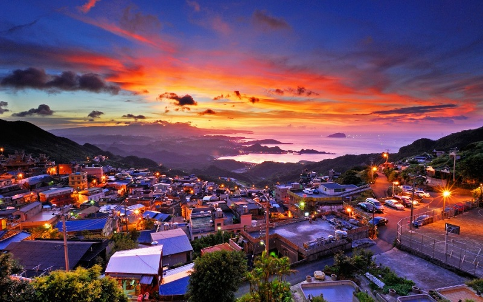
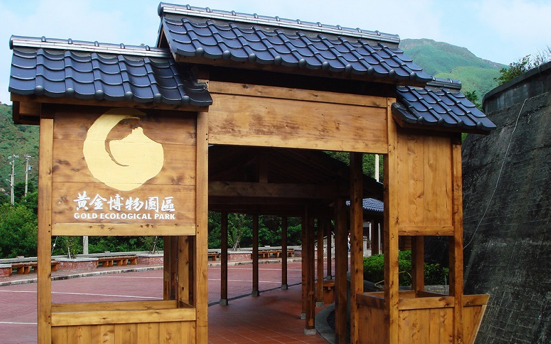
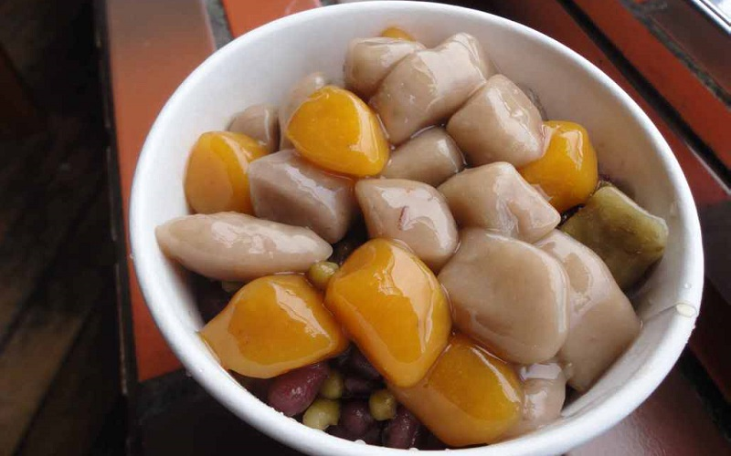

Jiufen
New Taipei City
Jiufen
 Jis a mountain area in Ruifang District. It was know for the production of gold, and the history of gold rush can be
traced back to the Qing Dynasty. Mining industry in Jiufen reached its peak during the Japanese rule period, and went down
in history in 1971. The Gold Ecological Park is a museum of the mining industry here. It provides information about
the discovery of gold in the area, with displays on the Benshan Tunnels, old mining equipment, mining transport systems.
Jiufen Old Street goes through most of the village and is surrounded by many steps. Red laterns in front of shops will be
lit up in the evening, which forms a nostalgic scenery. You can also overlook at the mountain city and the fishing lights,
because it is nearby the coastline of the northern Taiwan. Jiufen is also famous for the Taiwanese taro balls.
It is a popular local snack made of taro and sweet potatoes.
- Best seasons: all year around
- Transportation:
The nearest train station is Rueifang Station of the Taiwan Railways Administration Yilan Line,
which is 15 minutes away by bus.